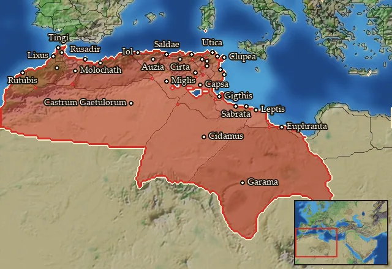

RTR: Imperium Surrectum
RTR: Imperium SurrectumRIS wiki › RIS Light › mercenaries
Africa
← all mercenary pools · wiki index
Mercenary pool: 5 units for hire in 32 regions.

Mercenaries
| Unit | Cost (dn) | Experience | At start | Most in pool | Added per turn | Who can hire | |
|---|---|---|---|---|---|---|---|
| Mercenary Numidian Archers | 3,105 | 0 | 1 | 2 | 0.111–0.221 | Any faction | |
| Mercenary Libyan Skirmishers | 3,086 | 0 | 1 | 2 | 0.111–0.223 | Any faction | |
| Mercenary Numidian Javelinmen | 3,451 | 2 | 1 | 1 | 0.1–0.199 | Any faction | |
| Mercenary Numidian Cavalry | 2,959 | 0 | 1 | 2 | 0.116–0.232 | Any faction | |
| Mercenary Towered Forest Elephants | 3,804 | 2 | 1 | 1 | 0.09–0.181 | Any faction |
Regions (32)
Ader Lepqi · Adrumet · Aspis · Auseia · Auzica · Ay-Khol · Bebaxal · Epichos · Gaetulia · Gaetulia Septentrionalis · Garamantia · Hekatompyle · Kirtan · Liksho · Mauretania · Mauretania Meridionalis · Mauretania Orientalis · Mauretania Septentrionalis · Phazania · Qart Hadasht · Rush Adir · Salda · Shigan · Syrtis · Thapsos · Ting · Tobgaxag · Woyxat · Xatiq · Xupon · Zabrutuxun · Zama Meizon